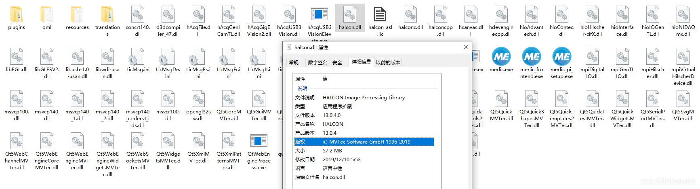
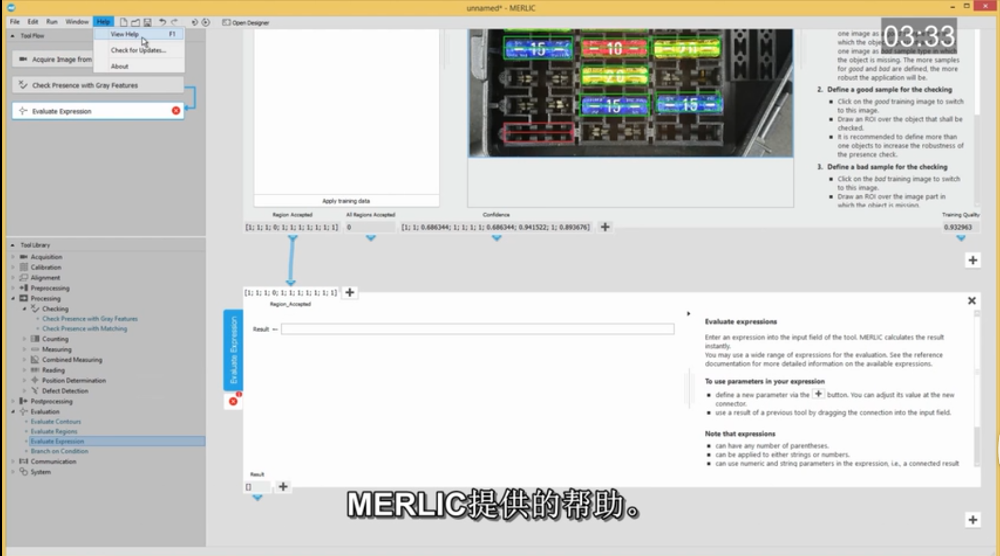

这个软件是当时刚刚学习视觉时找的，国内基本没人用，软件还是比较初级，价格则是很高，完全被大恒给玩坏了，大恒自己开发了“智能相机”，里面就是集成Merlic，只能对捕获图像简单处理，基本不能应用到实际项目中。 所以我也就不写当时如何使用的了，因为估计这个软件一时半会起不来，你也用不到。 ================================================================================== 软件一旦安装完成启动后就会默认有45天试用期！ 不过试用版也是有一些限制的，连续执行的运行模式下也只有2分钟！
下面是当时学习使用参考的一些网页链接：
Merlic 4.4.0 安装和试用教程
Merlic4.4版本内部也用到Halcon的图像处理库，版本是13.0.4

观看这个视频，了解MERLIC的基本概念。
https://www.mvtec.com/cn/services-support/videos-tutorials/single-video/what-is-merlic
MVTec MERLIC 是一款一体化软件产品，无需编程即可快速构建机器视觉应用。
它基于 MVTec 丰富的机器视觉专业知识，不仅性能快速可靠，而且方便易用。以图像为中心的用户界面和像 easyTouch 这样直观的交互理念提供了高效的工作流程，从而节省时间和成本。
MERLIC 提供强大的工具库，可通过图形用户界面、集成 PLC 通信和基于行业标准的图像采集功能，设计和构建完整的机器视觉应用。
MVTec MERLIC 包含所有标准机器视觉工具，如标定、测量、计数、检查、读数、定位以及高度图像 3D 视觉。
认识 MERLIC 5
MERLIC 5 推出一种新的许可模式，可以最大限度提高灵活性。这种模式允许客户选择完全适合自身应用范围的软件包和价格。根据应用需要的图像源和功能（“附加组件”）数量，有 Small、Medium、Large 和 X-Large 软件包以及免费试用版可供选择。这种新的“软件包”概念取代了以前的“版本”模式。
MERLIC 5 的发布标志着 MVTec 公司先进的深度学习技术正在融入一体化机器视觉软件 MERLIC。现在，用户可以比以往任何时候更轻松地利用深度学习的强大力量来实现自己的视觉应用。
MERLIC 5包括异常检测和分类深度学习技术。
异常值检测工具可以直接在 MERLIC 中执行所有的训练和处理步骤来检测异常情况。
分类工具可以使用分类器（例如，用 MVTec 的 Deep Learning Tool）来对 MERLIC 中的物体进行简易的分类。
MERLIC 5 包含图像源管理器 (ISM)。ISM 将图像采集源从工具流中分离出来，无需调整相机设置，即可在不同系统之间轻松复制和执行 MVApp。由于采用图形用户界面，管理和配置图像源可以轻松简单地完成。
转自：https://www.youtube.com/user/mvtecsoftware/videos MERLIC 一套無需編寫程式就能夠快速構建機器視覺應用且集多功能於一體的軟體產品。 它建構在 MVTec's 廣博精深的機器視覺專業知識上，並結合可靠，快速且易於操作的性能。 無需編寫程式的圖形化使用者介面 圖形化介面設計讓您可以透過圖像直接建構應用程式，而不再需要編寫源代碼或調整多項參數。 MERLIC 的卓越、創新且獨一無二的特色就是其 "easyTouch" 概念。並將以交互方式引導您逐步建構
